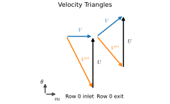
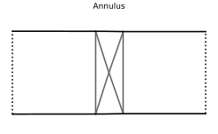
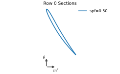

Tutorial¶
This tutorial walks through writing a new mean-line class in order to design a compressor. Running actual CFD is out of scope for now.
We first need to install turbigen, which can be achieved on Linux or macOS with something like these shell commands:
$ curl -LsSf https://astral.sh/uv/install.sh | sh
$ source $HOME/.local/bin/env
$ uv tool install turbigen
Usually, we run turbigen by passing an input YAML file containing all the data required to construct a turbomachine. Your mean-line design algorithm, being code not data, must be written seperately in Python. turbigen finds user-written designs by walking up from the input file looking for a directory called turbigen_plugins. The below commands create a directory called tutorial, change into it, create the turbigen_plugins directory, and create an empty input file and a Python file for the design:
$ mkdir tutorial
$ cd tutorial
$ mkdir turbigen_plugins
$ touch input.yaml turbigen_plugins/fan.py
The file structure should then look like this:
$ tree
.
├── input.yaml
└── turbigen_plugins
└── fan.py
2 directories, 2 files
Problem statement¶
Suppose we wish to design a rotor-only axial fan. We shall assume a constant axial velocity. The inlet state is specified as fixed values of \(T_{01}\) and \(p_{01}\) with no inlet swirl, \(\alpha_1=0\). We can then parametrise the aerodynamics of the stage using the following design variables (many other choices are possible):
Total pressure rise, \(\Delta p_0\)
Mass flow rate, \(\dot{m}\)
Flow coefficient, \(\phi=V_x/U\)
Loading coefficient, \(\psi= \Delta h_0/U^2\)
Hub-to-tip ratio, \(\mathit{HTR}=r_\mathrm{hub}/r_\mathrm{cas}\)
Total-to-total isentropic efficiency guess, \(\eta_\mathrm{tt}\)
To proceed with the annulus and blade shape construction, turbigen requires a mean line design: a nominal averaged flow field at the inlet and outlet of every blade row. For each of those stations we must supply
a thermodynamic state, \((h, s)\) for example
an absolute-frame velocity vector, \((V_x, V_r, V_\theta)\)
an annulus area, \(A_m\), and a mean radius, \(r_\mathrm{rms}\)
the angular velocity of the blade frame, \(\Omega\)
Mean-line design equations¶
We need to combine conservation of mass, momentum, and energy with definitions of our design variables to solve for the flow in the turbomachine. This will yield a set of equations that we will later implement numerically in a method on our new class.
The specified total pressure rise and guess of total-to-total efficiency allow calculation of the compressor work \(\Delta h_0 = h_{02}-h_{01}\)
where \(h_{02s}=h(p_{01}+\Delta p_0, s_1)\) is the ideal exit stagnation enthalpy for isentropic compression, i.e. enthalpy evaluated at the (lossy) exit stagnation pressure and (lossless) inlet entropy.
The blade speed \(U\) is then given from the definition of loading coefficient
The definition of flow coefficient yields the axial velocity \(V_x\)
Assuming no inlet swirl, \(V_{\theta 1}=0\) and the Euler work equation yields the rotor exit circumferential velocity
We now have stagnation thermodynamic states and velocity vectors at inlet and exit of the rotor. Static enthalpy follows from subtracting the kinetic energy at constant entropy, \(h = h_0 - \tfrac{1}{2}V^2\); entropy does not depend on the frame of reference. Now, passing \((h, s)\) to the equation of state will yield density \(\rho\) or any other static thermodynamic property as needed.
Conservation of mass then gives the annulus area at each station. Subscript \(m\) denotes the meridional projection with no circumferential component, as opposed to the flow area which is normal to the velocity vector (and thus dependent on flow angle).
and further specifying a hub-to-tip ratio fixes the mean radius
Finally, the shaft angular velocity is simply
Setting up the files¶
A mean-line design is a subclass of
MeanLineDesign which has two methods: forward(), which
turns design variables into a flow field MeanLine, and backward()
, which recovers the
design variables from a MeanLine built by forward() or averaged from a CFD solution.
The The design contract sets out in full what such a subclass declares and
what it inherits.
Copy the below skeleton of the class into turbigen_plugins/fan.py. The type string is the name a input file will use to ask for the new turbomachine, and n_row says how many blade rows it describes:
from turbigen.design import MeanLineDesign
class Fan(MeanLineDesign):
"""A single-row axial fan."""
type: str = "fan"
n_row: int = 1
def forward(self, fluid):
"""Return a mean line built from this design's variables."""
raise NotImplementedError("Implement the forward method")
def backward(self, ml):
"""Return the design variables represented by mean line `ml`."""
raise NotImplementedError("Implement the backward method")
We can now copy into input.yaml a skeleton configuration that asks for this design, but in order for the mean-line design to run we also need to specify the working fluid. The fluid: section names a fluid by its type and sets any properties needed to specify that type.
fluid:
type: perfect # Which fluid model, perfect or real
cp: 1005.0 # Specific heat at constant pressure [J/kg/K]
gamma: 1.4 # Ratio of specific heats [--]
mu: 1.8e-5 # Dynamic viscosity [Pa*s]
mean_line:
type: fan # Which plugin to use, compressor/turbine etc
If we ask turbigen to run the design for input.yaml at this point, it will load the input data but stop because forward is not implemented.
$ turbigen design input.yaml
*** TURBIGEN v0.1.dev1441+g96fcdd450 ***
...
NotImplementedError: Implement the forward method
Total time: 0.0 s
Design variables¶
We now need to declare the design variables we need to take from the input file, by adding them as fields to the class.
# ...
class Fan(MeanLineDesign):
"""A single-row axial fan."""
type: str = "fan"
n_row: int = 1
DPo: float
"""Stagnation pressure rise across the rotor [Pa]."""
mdot: float
"""Mass flow rate [kg/s]."""
phi: float
"""Inlet flow coefficient [--]."""
psi: float
"""Stage loading coefficient [--]."""
htr: float
"""Inlet hub-to-tip ratio [--]."""
eta_tt: float
"""Total-to-total isentropic efficiency [--]."""
Po1: float = 1e5
"""Inlet stagnation pressure [Pa]."""
To1: float = 300.0
"""Inlet stagnation temperature [K]."""
# ...
Optionally, a default can be set for a field, which will be used if the input file does not specify a value; the input file must include all fields without defaults. Hence, running the design now will produce a different error:
$ turbigen design input.yaml
*** TURBIGEN v0.1.dev1441+g96fcdd450 ***
...
TypeError: Fan.__init__() missing 6 required keyword-only arguments: 'DPo', 'mdot', 'phi', 'psi', 'htr', and 'eta_tt'
Total time: 0.0 s
Note that To1 and Po1 are not mentioned in the error message, because we specified their defaults in the class (although the input file can override those defaults if needed). Finally, before moving to implementing the algorithm, add values for the missing design variables to input.yaml:
# ...
mean_line:
type: fan # Which plugin to use, compressor/turbine etc
DPo: 2000.0 # Stagnation pressure rise [Pa]
mdot: 5.0 # Mass flow rate [kg/s]
phi: 0.5 # Flow coefficient
psi: 0.4 # Loading coefficient
htr: 0.8 # Inlet hub-to-tip ratio
eta_tt: 0.9 # Efficiency guess
Forward method¶
We can now code up the Mean-line design equations. The forward method takes a fluid
object as an argument, and can access the design variables as attributes of
self. The method must return a MeanLine object
with the flow field filled in.
The fluid object is the equation of state named by fluid:
in the input file, whose interface is documented in ember.fluid. That
interface is a pair of method families: a set_X_Y takes the two properties
named and returns the density and internal energy pair that fixes the state,
and a get_Z evaluates one property from that pair. The full list of both is
in that reference; the ones used below are all this design needs.
The Fan class specifies inlet stagnation pressure and
temperature, but enthalpy and entropy are more
convinient to work with. fluid.set_P_T()
returns the density and internal energy
pair for a pressure and a temperature, which are then passed
to fluid.get_h() and
fluid.get_s() to evaluate stagnation enthalpy and
entropy (noting that entropy does not depend on the frame of reference):
def forward(self, fluid):
# Inlet stagnation enthalpy and entropy
rhoo1, uo1 = fluid.set_P_T(self.Po1, self.To1)
ho1 = fluid.get_h(rhoo1, uo1)
s1 = fluid.get_s(rhoo1, uo1)
At no point have we used perfect gas relations — a design class should make no assumptions about the equation of state.
To evaluate Eqn. (1) we straightforwardly calculate exit stagnation pressure from the specified pressure rise, and pass it together with inlet entropy through fluid.set_P_s() and fluid.get_h() to evaluate the ideal exit enthalpy. Then rearrange and use the definition of efficiency to find the work done:
# Ideal exit stagnation enthalpy
Po2 = self.Po1 + self.DPo
ho2s = fluid.get_h(*fluid.set_P_s(Po2, s1))
# Work from the definition of efficiency
Dho = (ho2s - ho1) / self.eta_tt
The blade speed and velocities then follow directly from the definitions Eqns. (2) to (4):
# Blade speed from the definition of loading coefficient
U = np.sqrt(Dho / self.psi)
# Axial velocity from the definition of flow coefficient
Vx = self.phi * U
# Exit swirl from the Euler work equation, no inlet swirl
Vt2 = Dho / U
The exit entropy is set by the actual work and pressure rise, evaluated with
fluid.set_P_h() and
fluid.get_s(). Then
with entropy, stagnation enthalpy, and velocity known at both stations, the
static states come from subtracting kinetic energy.
# Exit entropy from actual work and pressure rise
ho2 = ho1 + Dho
s2 = fluid.get_s(*fluid.set_P_h(Po2, ho2))
# Static enthalpy from stagnation enthalpy less KE
Vt = np.array([0.0, Vt2])
ho = np.array([ho1, ho2])
s = np.array([s1, s2])
h = ho - 0.5 * (Vx**2 + Vt**2)
We can now store the flow field in a MeanLine
object, a blank instance of which is created by calling
allocate(). The indexing convention for mean
line stations is that ml.shape == (2, n_row), where the first index is the
station (0 for inlet, 1 for exit) and the second index is the row number. It is
often more convenient to work with a one-dimensional view of shape (2*n_row,), which
can be obtained through the ml.flat property. All data flows go through setter
methods on the MeanLine object that ensure
the flow field is consistent and valid. See Mean-line flow field for the full
reference of what is stored, how it is indexed, and which setters are
available. In our case:
# Store the flow field
ml = self.allocate(fluid)
flat = ml.flat
flat.set_h_s(h, s)
flat.set_Vx(Vx)
flat.set_Vr(0.0)
flat.set_Vt(Vt)
Now that the flow field is stored, we can use attributes on the MeanLine object to evaluate derived quantities automatically. For example, we need density to set the annulus area via conservation of mass, Eqn. (5), which we can access as ml.flat.rho. The hub-to-tip ratio then fixes the mean radius,
Eqn. (6), from which the shaft speed follows by Eqn. (7):
# Conservation of mass sets the annulus areas
flat.set_Am(self.mdot / flat.rho / Vx)
# Fix a constant mean radius using inlet HTR
Am1 = flat.Am[0]
r_rms = np.sqrt(Am1 / (2.0 * np.pi) * (1.0 + self.htr**2) / (1.0 - self.htr**2))
ml.set_r_rms(r_rms)
ml.set_Omega(U / r_rms)
That is every quantity the mean line needs, so forward can now return it. In full:
def forward(self, fluid):
# Inlet stagnation enthalpy and entropy
rhoo1, uo1 = fluid.set_P_T(self.Po1, self.To1)
ho1 = fluid.get_h(rhoo1, uo1)
s1 = fluid.get_s(rhoo1, uo1)
# Ideal exit stagnation enthalpy
Po2 = self.Po1 + self.DPo
ho2s = fluid.get_h(*fluid.set_P_s(Po2, s1))
# Work from the definition of efficiency
Dho = (ho2s - ho1) / self.eta_tt
# Blade speed from the definition of loading coefficient
U = np.sqrt(Dho / self.psi)
# Axial velocity from the definition of flow coefficient
Vx = self.phi * U
# Exit swirl from the Euler work equation, no inlet swirl
Vt2 = Dho / U
# Exit entropy from actual work and pressure rise
ho2 = ho1 + Dho
s2 = fluid.get_s(*fluid.set_P_h(Po2, ho2))
# Static enthalpy from stagnation enthalpy less KE
Vt = np.array([0.0, Vt2])
ho = np.array([ho1, ho2])
s = np.array([s1, s2])
h = ho - 0.5 * (Vx**2 + Vt**2)
# Store the flow field
ml = self.allocate(fluid)
flat = ml.flat
flat.set_h_s(h, s)
flat.set_Vx(Vx)
flat.set_Vr(0.0)
flat.set_Vt(Vt)
# Conservation of mass sets the annulus areas
flat.set_Am(self.mdot / flat.rho / Vx)
# Fix a constant mean radius using inlet HTR
Am1 = flat.Am[0]
r_rms = np.sqrt(Am1 / (2.0 * np.pi) * (1.0 + self.htr**2) / (1.0 - self.htr**2))
ml.set_r_rms(r_rms)
ml.set_Omega(U / r_rms)
return ml
If we now run turbigen on input.yaml, it will load the input data, build the mean line, and then fall over because backward is not implemented:
$ turbigen design input.yaml
*** TURBIGEN v0.1.dev1441+g96fcdd450 ***
...
NotImplementedError: Implement the backward method
Total time: 0.0 s
Backward method¶
backward is the encapsulation of what each design variable means. It is a check that the mean line forward built really is the design that was asked for and it is also how design variables are calculated from a mixed-out CFD solution to compare to the nominal design.
backward returns a dictionary keyed by the field names; extra keys beyond the
design variables are reported for information only but not checked for
consistency, as described under Design process. The MeanLine has many attributes that
contain useful derived properties for this purpose — see the
derived properties tables. The properties ml.inlet
and ml.outlet index into the machine inlet and outlet (across all rows).
def backward(self, ml):
return {
# Design variables
"DPo": ml.outlet.Po - ml.inlet.Po,
"mdot": ml.inlet.mdot,
"phi": ml.inlet.Vx / ml.inlet.U,
"psi": (ml.outlet.ho - ml.inlet.ho) / ml.inlet.U**2,
"htr": ml.inlet.htr,
"eta_tt": ml.eta_tt,
"Po1": ml.inlet.Po,
"To1": ml.inlet.To,
# Optional diagnostic variables
"PR_tt": ml.PR_tt,
"eta_ts": ml.eta_ts,
}
With both methods written, the design runs to completion. turbigen calls forward to build the mean line, passes it back through backward to check that the design variables it asked for are the ones it got, and prints the result — the Design process in full:
$ turbigen design input.yaml
*** TURBIGEN v0.1.dev1441+g96fcdd450 ***
...
Mean line: Row 0
Inlet Outlet
Po/bar 1.000 1.020
To/K 300.00 301.89
Ma 0.099 0.127
Ma_rel 0.222 0.155
Alpha/deg 0.0 38.7
Alpha_rel/deg -63.4 -50.2
Total time: 0.0 s
Annulus and blade shapes¶
With the mean line built, we can now construct the annulus lines and blades by specifying some more input data.
To use the built-in annulus requires only a few fairly self-explanatory lines in the input file:
# ...
annulus:
type: aspect_ratio # How to select axial chord
AR_row: [3.0] # span/chord ratio of the row
AR_gap: [1.0, 1.0] # span/length ratio of inlet and exit ducts
# ...
Blade specification is more involved. We need to choose how many blades in each row; the Lieblein diffusion factor is a good starting point for compressors. We can construct the blade sections at any number spanwise positions by choosing camber and thickness distribution, with the camber and thickness parameters smoothly interpolated across the span.
# ...
blades:
# List of rows
- count:
type: DFL # Which method to set number of blades
DFL: 0.45 # Lieblein diffusion factor value
sections:
# List of sections
- spf: 0.5 # Span fraction of the section
dchi_LE: 0.0 # Leading edge recamber [deg]
dchi_TE: 0.0 # Trailing edge recamber [deg]
camber:
# Simple quadratic camber line
type: quadratic
aft_loading: 0.0
thickness:
# Piecewise cubic thickness distribution
type: taylor # After Taylor and Miller (2017)
R_LE: 0.02 # Leading edge radius/chord
t_max: 0.06 # Maximum thickness/chord
m_tmax: 0.35 # Chord fraction at maximum thickness
kappa_max: 0.0 # Curvature at maximum thickness
t_TE: 0.01 # Trailing edge thickness/chord
tanwedge: 0.05 # Trailing edge wedge angle tangent
Now passing the input file to turbigen will now build the mean line and the annulus and blade shapes to give us some more printout, including the calculated meridional chord, number of blades, tip gap, and pitch-to-chord ratio:
$ turbigen design input.yaml
*** TURBIGEN v0.1.dev1441+g96fcdd450 ***
...
Mean line: Row 0
Inlet Outlet
Po/bar 1.000 1.020
To/K 300.00 301.89
Ma 0.099 0.127
Ma_rel 0.222 0.155
Alpha/deg 0.0 38.7
Alpha_rel/deg -63.4 -50.2
Annulus: Row 0
Inlet Outlet
r_rms/m 0.3017 0.3017
r_hub/m 0.2666 0.2670
r_tip/m 0.3332 0.3329
Am/m2 0.1256 0.1243
htr 0.8000 0.8019
cx/m 0.0221
AR 3.0000
Blades: Row 0
N_blade 55
Gap/m 0.0000
s/cm 1.578
Total time: 0.0 s
Plotting¶
So far, our invocation of turbigen has been in design mode, which only prints to the console. We can save more detailed plots to disk by running report mode, which will write a post.pdf report with plots of the design, and if CFD were run the post-processed flow field as well. Report mode also saves an output.yaml file which is the same as the input file but with any defaults filled in, and a transcript of the console output in log_turbigen.txt. So if we run:
$ turbigen report input.yaml
*** TURBIGEN v0.1.dev1441+g96fcdd450 ***
...
No solution was marched, skipping the convergence plot.
No solved grid, skipping the surface distribution plot.
No grid to cut, skipping the contour plot.
Wrote report to /home/runner/work/turbigen/turbigen/tutorial/step5/post.pdf
Wrote resolved configuration to /home/runner/work/turbigen/turbigen/tutorial/step5/output.yaml
Total time: 0.6 s
Output directory was: /home/runner/work/turbigen/turbigen/tutorial/step5
The flow-field plots are skipped because no CFD has been run; the annulus, blade section and velocity triangle plots are drawn from the geometry alone. All of the output is written alongside the input file:
$ ls
input.yaml
log_turbigen.txt
output.yaml
post.pdf
turbigen_plugins
Opening post.pdf shows the mean-line velocity triangles, the meridional annulus view, the blade-to-blade sections of each row:
{kind=link}

{kind=link}

{kind=link}

Extensions¶
This tutorial has demonstrated some of the functionality of turbigen. We have now designed a new turbomachine and had a look at the resulting geometry.
Within the current choice of mean-line parameterisation, any change to the design is just an edit to input.yaml:
Change the number of blades by changing the diffusion factor DFL, or fix a count directly with
count: {type: Nb, Nb: 55}Specify blade sections at several spanwise locations
Change the aspect ratio AR_row
Change the working fluid to a real gas under fluid:, evaluated from a thermodynamically consistent fitted equation of state [Wheeler, 2024]
To change the mean-line design itself, edit forward and backward in fan.py. For example: relax the assumption of constant axial velocity by adding a velocity ratio as a field, replace the loading coefficient with a de Haller number, or specify an inlet Mach number instead of a mass flow rate. The last two cannot be built in one pass like the design variables here, because the flow field has to be known before either can be evaluated; see Implicit design problems for how to solve for them.
To add a stator, raise n_row to 2 and extend forward to fill in four stations rather than two. Rows are indexed by the second axis, so ml[:, 0] will be the rotor and ml[:, 1] the stator, each of shape (2,); ml[0] and ml[1] remain the inlet and outlet stations of every row. We need to call ml[:, 0].set_Omega to make only the rotor spin. ml.flat will now be of shape (4,), indexed from machine inlet to machine outlet.